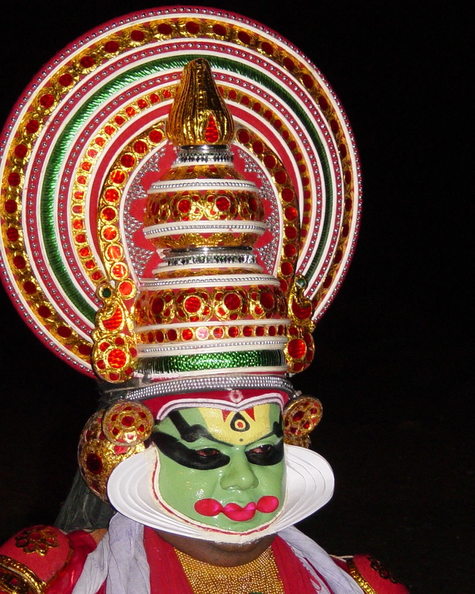
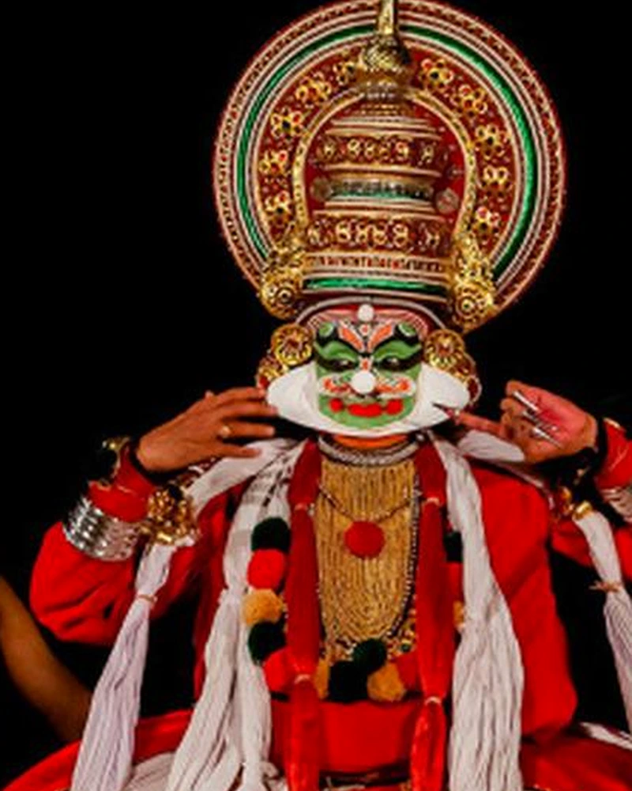
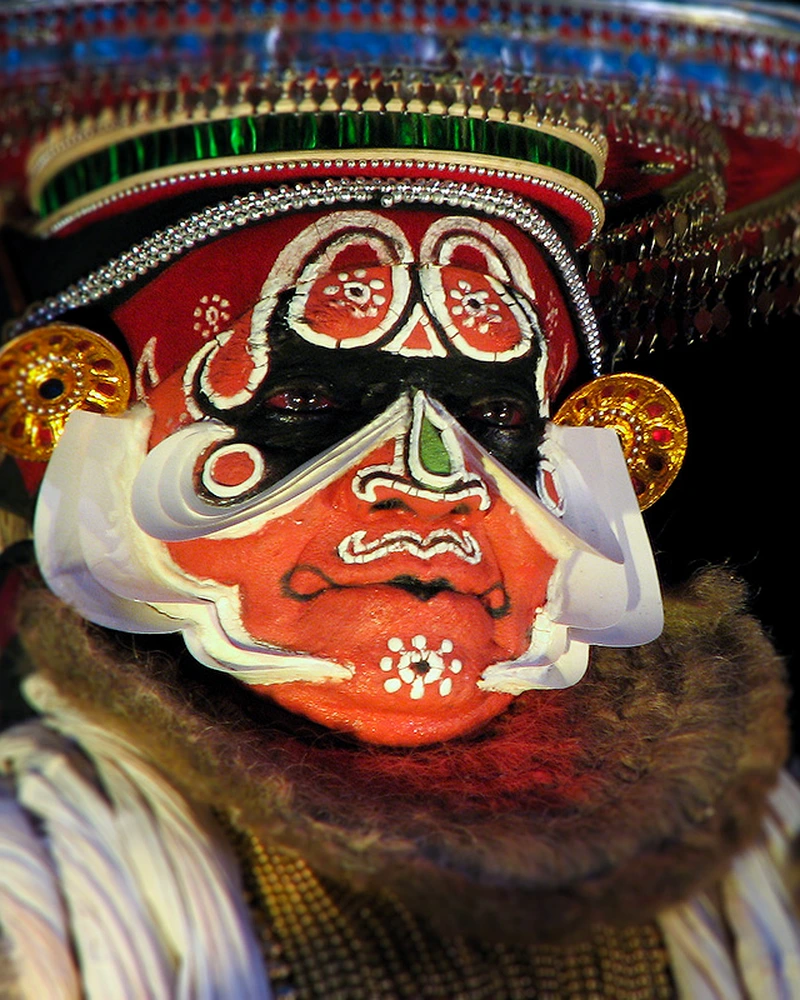
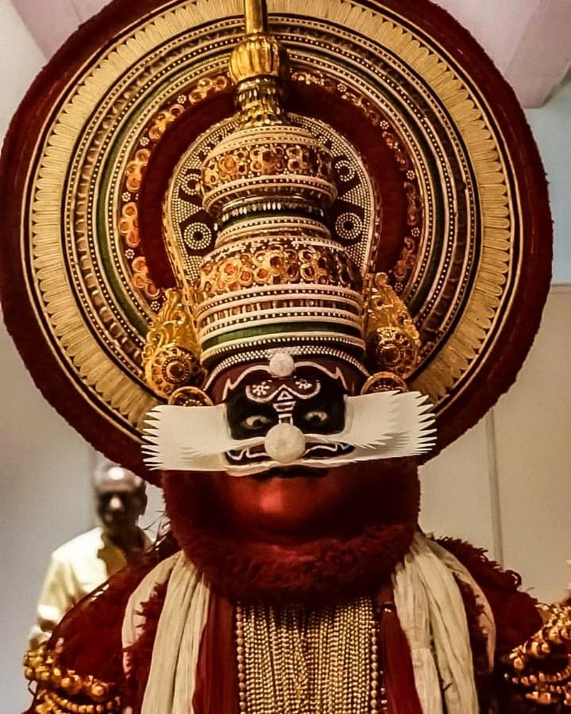
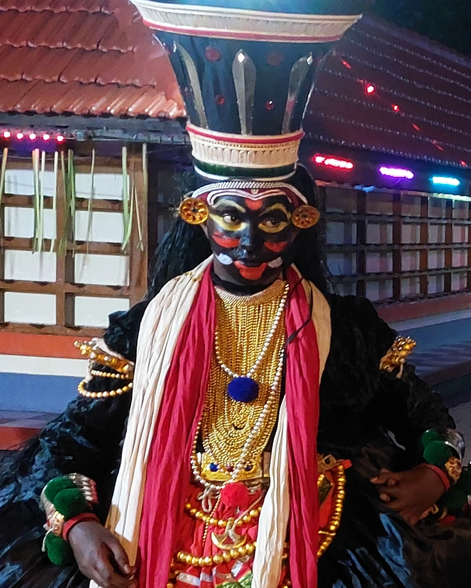
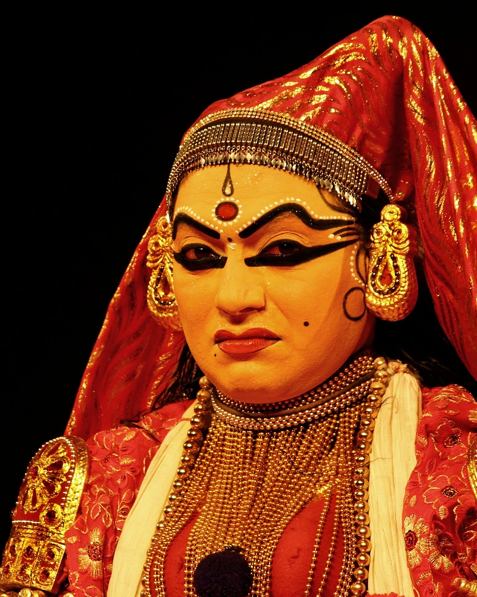

SATTVIC NOBILITY
PACCHA
The Noble Protagonist • Divine Kings & Gods
Luminous emerald green base, white contoured Chutti frame, multi-tiered royal golden Kireedam.
In Kathakali, actors do not portray historical realism; they embody cosmic archetypes. Through the transformative ritual of Aharya Abhinaya (costume, facial pigmentation, rice-paste Chutti, and gilded headgear), the human performer transcends into gods, noble sovereigns, tragic anti-heroes, ferocious demons, and luminous spiritual seekers.

Luminous emerald green base, white contoured Chutti frame, multi-tiered royal golden Kireedam.

Green base with red upturned knife moustaches, white pith knobs on nose tip and forehead.

Lush white beard, flat circular floral Vattamudi headgear, white furry coat, eyes framed in devotion.

Massive crimson beard, colossal cylindrical headgear, ferocious white knobs, roaring curtain raiser.

Pitch black face with white crescent dots, protruding fangs, black regalia, untamed primeval malice.

Luminous warm herbal skin tone dusted with mica, gentle draped veils, subtle expressive eyes.
Try searching with another keyword such as "Paccha", "Ravana", "Hanuman", or select "All Veshams".
In the green room (Aniyara) of Ayroor, hours before dusk, the transformation of the actor into an epic being begins. The ritual of Chutti application—layering pure white paste crafted from rice flour and unslaked lime along the jawline—frames the human face into a divine living mask.
The white ridges running from the ears along the jawline act as acoustic and visual baffles, accentuating every subtle movement of the facial muscles, cheeks, and eyes under flickering brass lamp (Aattavilakku) flames.
Traditional Kathakali cosmetics use natural earth pigments: Manayola (arsenic disulphide) for yellow/green, Chayilyam (vermilion) for vibrant reds, and pure coconut soot (Mashi) for deep black eye framing.
The monumental Kireedam crowns, carved from Kumizhu (white teak) wood and inlaid with shimmering iridescent beetle wings and emerald glass, lend the actor majestic otherworldly proportion.